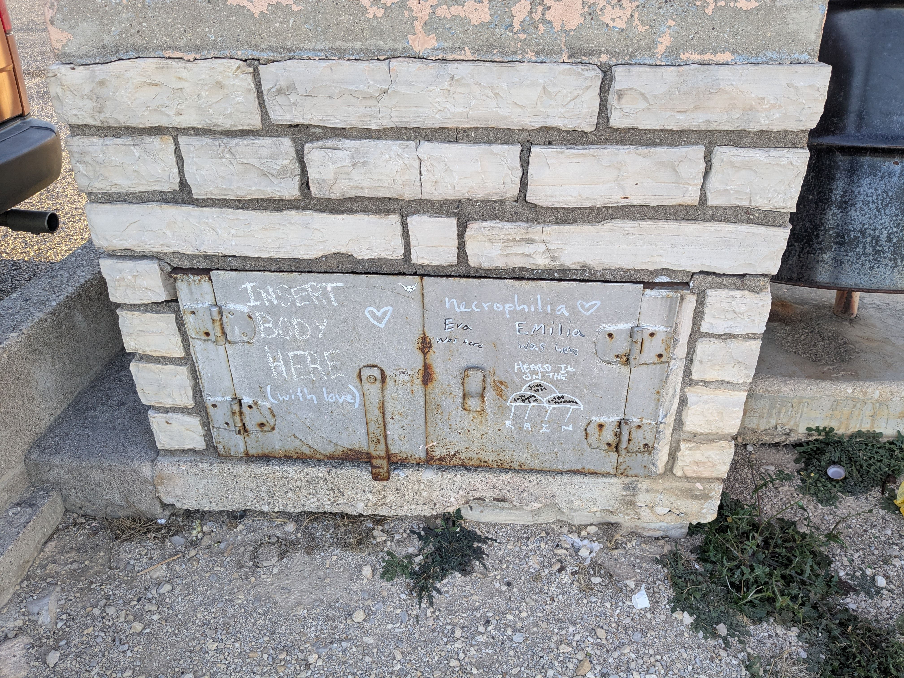

Conclusions
[EN]
General#
I'm writing this as I've been back to LA for almost a week. These recent days have been very busy – I've been selling my stuff; almost everything must be gone by the end of March. I guess the biggest outcome of this roadtrip was my decision to continue traveling and observing. For at least several more month, and paying the rent is too much.
I spent 42 days on this roadtrip and covered whooping 5660 miles. While visiting national parks and other natural and man-made attractions was fun, at some point it had grown to be tiresome. My brain could only absorb so much novelty. Spending a lot of time driving was also somewhat tiring, and it felt ... wasteful. Like, why am I driving hundreds of miles from point A to point B? Why am I spending time, gas, resource of my car, and creating entropy? Just for the sake of crating a kaleidoscope of new places? It was okay to do such a long roadtrip once every several years. As a reset of a kind. But I don't want to travel in this mode again anytime soon.
So why am I terminating my lease and moving to my car? Because I want to see more of how people live. The two weeks I spent with Jack's family was a pivotal period after which I made a decision. Because I lack clear directions in my life, observing others, I believe, will expand my outlook on life and its possibilities. Something I will be able to use when deciding on my next steps. I have a lot of appetite to see different lifestyles raw; not through YouTube or social media. The plan is to volunteer for different people, farms, and homesteads. I'm looking in the northern direction – North California, Oregon, maybe Washington state. Observe and learn new skills, very simple.
Comforts#
Honda Element is an amazing car all around. Its boxy shape and flat floor with easily removable rear seats makes it a perfect tiny house on wheels. Without actually building things (aside from a bed frame, but that was easy), I came up with a setup that covers all my needs: I can cook inside, I can read inside, I can sleep inside, I can even do stretches inside. It was a blessing in disguise when I totaled my beautiful Subaru and picked the Cube as a replacement.
It was also eye-opening at how little things I need to actually live full-time in a car. The groceries were a bit trickier – without a fridge I couldn't store meats or perishable products. But then it was totally fine getting some meat from a store for dinner and cooking it the same evening (plus breakfast). Eggs and cheese fare okay without a fridge. Jerky and canned food were a great source of protein too. Other than that, while in car I obviously couldn't buy in bulk, so I was spending more on food. But, surprisingly, I was eating less – I had way fewer periods when I was bored and had to distract myself with food.
A single-burner butane stove was more than enough for me to cook all kinds of simple things. One butane canister lasted me for three - three and a half weeks of regular cooking. I was impressed. Another good appliance is a small electric kettle. It was a bit pricey – $60 – but totally worth it. It runs on 500W and the desired temperature of water can be chosen from 4 options. Very convenient device when I needed to steam couscous or oatmeal while cooking something else in parallel on the stove.
I travelled mainly in colder climates, the solution for cold nights and evenings was simple – a very warm sleeping bag and layers. A sleeping bag liner on its own worked really well when I had several hot nights in Austin. For warmer weather I'll need to get some fans and bug nets for the windows.
Laundry and showering were super easy. There were plenty of truck stops and laundromats. I didn't mind taking a shower once a week; in between I used wet wipes and water from a jug to wash armpits, face, and neck.
I improved my squatting technique greatly by shitting in the woods all the time.
One of the keys to feel comfortable was keeping things tidy in my car. I always packed everything back in their storage location before hitting the road. As a bonus, I always knew where my stuff was.
Less is more.
Time#
I thought I would have more time to do things. No distractions -> more time to read, think, write, practice ukulele. For starters, I did forget ukulele at home. Then, the driving itself took a lot of time – almost like a full-time job; and the quality of thought while driving varies. Without external stimulation, like a conversation, a book, etc. – the thoughts usually became repetitive and rarely insightful. Outside of driving, cooking, prepping, and cleaning consumed more time compared to when I was at home. For obvious reasons. When it was cold outside in the evening, I wanted to crawl into sleeping bag and sleep, rather than reading. Everything combined, I didn't have that much "quality" time available for leisure. But when I had, I found it more enjoyable to read, take notes, or listen to a podcast.
The time is a very valuable commodity that passes very quickly, regardless of whether you have a full-time employment or not. I realized that I had several time sinks at home without even noticing them – living a "highly" organized life doesn't necessarily eliminate them.
When doing things that have a purpose – they need to be purposeful to me only – the flow of time slows. That's the only way I've discovered of how not to feel bad about "wasted" time.
People#
I expected I would interact with much more people on this journey. It didn't happen. I had a lot of short random encounters with random people. I had several quality encounters. The conclusion, I guess, that it's nearly impossible to establish a connection when you're always on the road. Dah. But the few connections I did establish or re-established are of quality. Leaving your "zone" is a pre-requisite for establishing new connections, always. Sometimes you leave your "zone" by traveling. But to establish a connection you must settle, albeit temporary, in one place.
People I met were generally very nice and friendly. Yes, I can not remember a single encounter that left me scratching my head.
Journaling#
Keeping this journal was a good idea. I give myself a lot of credit for deliberately taking and publishing notes. It wasn't always easy, even though I tried to make journaling as low-effort as possible. Still, on average it took one-one and a half hours to prepare an entry with AI-generated Ukrainian translation. It was a worthy effort. I further improved my writing skills. I committed new knowledge to my long-term memory by describing it with my own words. I kept myself disciplined. This journal will remain as an important artifact of one of the periods in my life.
It was also very awkward to share this journal with my parents. Or with other people in general. Knowing that other people read my journal definitely affected the style and content of some of the entries.
I've been taking notes on "life" for several years now. I find this practice very beneficial. Why you should write for yourself.

[UKR]
General[UKR]#
Пишу це після майже тижня в ЛА. Останні дні були дуже насичені – продаю свої речі; до кінця березня майже все має піти. Мабуть, головним результатом цієї подорожі стало моє рішення продовжувати подорожувати та спостерігати. Принаймні ще кілька місяців, а платити оренду – це занадто.
За ці 42 дні подорожі я КМ проїхав 9110. Хоча відвідування національних парків та інших природних і рукотворних пам'яток було цікавим, в якийсь момент це стало втомлювати. Мій мозок міг сприйняти лише обмежену кількість нового. Проводити багато часу за кермом теж було дещо виснажливо, і це відчувалось... марнотратно. Типу, навіщо я їду сотні кілометрів від точки А до точки Б? Навіщо витрачаю час, пальне, ресурс машини і створюю ентропію? Просто заради калейдоскопу нових місць? Нормально робити такі довгі подорожі раз на кілька років. Як своєрідне перезавантаження. Але я не хочу подорожувати в такому режимі знову найближчим часом.
То чому ж я розриваю оренду і переїжджаю в машину? Тому що хочу більше бачити, як люди живуть. Два тижні, проведені з родиною Джека, стали переломним моментом, після якого я прийняв рішення. Оскільки мені бракує чіткого напрямку в житті, спостереження за іншими, я вважаю, розширить мій світогляд та уявлення про можливості. Щось, що я зможу використати, вирішуючи свої наступні кроки. Маю велике бажання побачити різні стилі життя наживо; не через YouTube чи соцмережі. План – волонтерити у різних людей, на фермах та садибах. Дивлюся в північному напрямку – Північна Каліфорнія, Орегон, може, штат Вашингтон. Спостерігати і вчитися новим навичкам, все дуже просто.
Comforts[UKR]#
Honda Element - просто неймовірна тачка. Її кубічна форма та пласка підлога зі знімними задніми сидіннями роблять її ідеальним компактним будинком на колесах. Не будуючи нічого особливого (крім каркасу для ліжка, але це було просто), я створив setup, який покриває всі мої потреби: можу готувати всередині, читати, спати, навіть розтяжку робити. Коли я розбив свою красуню Subaru, це виявилося прихованим благословенням - я взяв собі цей Куб натомість.
Було також відкриттям, як мало речей насправді потрібно для життя в машині. З продуктами було трохи складніше - без холодильника я не міг зберігати м'ясо чи швидкопсувні продукти. Але виявилося, що цілком нормально купувати м'ясо в магазині на вечерю і готувати його того ж вечора (плюс сніданок). Яйця та сир нормально тримаються і без холодильника. В'ялене м'ясо та консерви теж були чудовим джерелом білка. Загалом, живучи в машині, я очевидно не міг закуповуватися оптом, тому витрачав на їжу більше. Але, на диво, їв менше - у мене було набагато менше періодів, коли я нудьгував і мусив відволікатися їжею.
Одноконфорочна газова плитка на бутані була більш ніж достатньою для приготування всіляких простих страв. Одного балона бутану мені вистачало на три - три з половиною тижні регулярного готування. Я був вражений. Ще один корисний девайс - маленький електрочайник. Досить дорогий - $60 - але того вартий. Працює на 500Вт, і можна вибрати потрібну температуру води з 4 варіантів. Дуже зручна штука, коли треба було запарити кускус чи вівсянку, паралельно готуючи щось на плиті.
Я подорожував переважно в холодному кліматі, рішення для холодних ночей та вечорів було простим - дуже теплий спальник та шари одягу. Сам вкладиш для спальника чудово працював, коли було кілька спекотних ночей в Остіні. Для теплішої погоди треба буде взяти кілька вентиляторів та москітні сітки на вікна.
З пранням та душем все було супер просто. Було повно зупинок для далекобійників та пралень. Я спокійно ставився до того, щоб приймати душ раз на тиждень; між душами користувався вологими серветками та водою з бутля для миття пахв, обличчя та шиї.
Я значно покращив свою техніку присідання, постійно сраючи в лісі.
Одним з ключів до комфорту було тримати речі в машині в порядку. Я завжди складав все назад на свої місця перед тим, як вирушити в дорогу. Як бонус - я завжди знав, де мої речі.
Менше значить більше.
Time[UKR]#
Я думав, що матиму більше часу на різні справи. Жодних відволікань -> більше часу на читання, роздуми, писання, гру на укулеле. Для початку, я забув укулеле вдома. Потім саме водіння забирало купу часу – майже як повноцінна робота; і якість думок під час керування автом різниться. Без зовнішньої стимуляції, як-от розмови, книги тощо – думки зазвичай ставали повторюваними й рідко проникливими. Поза водінням, приготування їжі, підготовка та прибирання займали більше часу порівняно з домом. З очевидних причин. Коли надворі ввечері було холодно, хотілося заповзти в спальник і спати, а не читати. Загалом, я не мав так багато "якісного" часу для дозвілля. Але коли він був, я отримував більше задоволення від читання, нотаток чи прослуховування подкастів.
Час – це дуже цінний ресурс, який спливає надзвичайно швидко, незалежно від того, маєш ти повну зайнятість чи ні. Я усвідомив, що вдома у мене було кілька часових "поглиначів", яких я навіть не помічав – життя "надорганізованої" людини не обов'язково їх усуває.
Коли робиш щось, що має мету – важливо щоб вона була значущою саме для мене – плин часу сповільнюється. Це єдиний спосіб, який я відкрив для себе, щоб не почуватися погано через "змарнований" час.
People[UKR]#
Я думав, що під час цієї подорожі спілкуватимусь з набагато більшою кількістю людей. Не склалося. Було багато коротких випадкових зустрічей з випадковими людьми. Було кілька якісних зустрічей. Висновок, мабуть, такий - майже неможливо встановити зв'язок, коли ти постійно в дорозі. Та-дам. Але ті нечисленні зв'язки, які я все ж встановив або відновив - якісні. Вихід із своєї "зони комфорту" - це завжди передумова для встановлення нових зв'язків. Іноді ти виходиш зі своєї "зони" подорожуючи. Але щоб встановити зв'язок, треба осісти, хоча б тимчасово, в одному місці.
Люди, яких я зустрічав, загалом були дуже привітними та дружніми. Так, я навіть не можу згадати жодної зустрічі, яка б залишила мене в подиві.
Journaling[UKR]#
Вести цей щоденник була хороша ідея. Я можу похвалити себе за те, що свідомо вів і публікував нотатки. Це не завжди було легко, хоча я намагався зробити процес ведення щоденника якомога простішим. Все ж, в середньому підготовка запису з AI-перекладом українською займала годину-півтори. Це були варті зусилля. Я покращив свої навички письма. Я закріпив нові знання в довготривалій пам'яті, описуючи їх власними словами. Я тримав себе в дисципліні. Цей щоденник залишиться важливим артефактом одного з періодів мого життя.
Було також дуже незручно ділитися цим щоденником з батьками. Та й з іншими людьми загалом. Знання того, що інші люди читають мій щоденник, безумовно вплинуло на стиль і зміст деяких записів.
Я вже кілька років веду нотатки про "життя". Вважаю цю практику дуже корисною. Чому варто писати для себе.